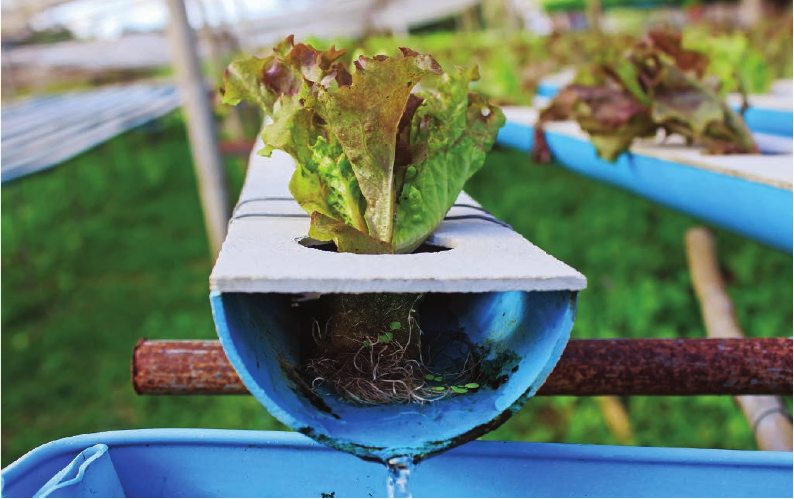

bottle garden. This system works great for leafy green crops like lettuce and basil, but is horrible for larger crops like tomatoes. You should also consider the diversity of crops you want to grow. Do you want to grow crops with a wide range of nutrient requirements and desired pH ranges? The best option sometimes is to have multiple systems. The best part about growing plants is that they are generally easy to replace! Experiment with new crops and learn from experience. I offer a lot of guidelines in this chapter and useful crop selection notes in the appendix, but these guidelines are not meant to prevent you from experimenting. Many crops will grow in conditions outside of their ideal range. Plants are far more tolerant than we give them credit for. Don't be afraid to fail; there are always more seeds to plant! Degree of difficulty is a primary consideration when choosing a hydroponic system. This recirculating trough system is relatively simple to make but requires regular monitoring and maintenance. Choosing a System by Location There are hydroponic systems for growing lettuce in space! No matter your location, there is potential to grow plants hydroponically. I even have a hydroponic garden in my RV. For each of the systems listed in this chapter I give location suggestions. Many of these systems can be modified for indoors, outdoors, small spaces, or large ones. Choosing a System by Maintenance Requirements The ratio of plants to volume of water is generally the biggest factor for estimating maintenance requirements. A system with a small reservoir and a lot of plants will need frequent maintenance because the grower will need to add water and amend the reservoir with fertilizer as the plants quickly reduce the water level in the reservoir. 40 DIY HYDROPONIC GARDENS
